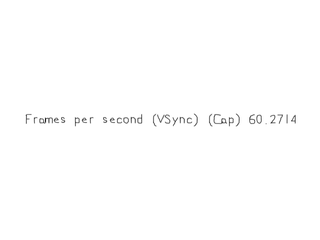

Frame Rate and VSync

Last Updated: Jun 8th, 2025
Odds are if you tried to any motion with SDL, everything ran incredibly fast. Here we're going to use a few tools to manage frame rate./* Constants */
//Screen dimension constants
constexpr int kScreenWidth{ 640 };
constexpr int kScreenHeight{ 480 };
constexpr int kScreenFps{ 60 };
We're going to define a constant to define the frames per second we want to cap the frame rate to.
//Create window with renderer
//Create window with renderer
if( SDL_CreateWindowAndRenderer( "SDL3 Tutorial: Frame Rate and VSync", kScreenWidth, kScreenHeight, 0, &gWindow, &gRenderer ) == false )
{
SDL_Log( "Window could not be created! SDL error: %s\n", SDL_GetError() );
success = false;
}
else
{
//Enable VSync
if( SDL_SetRenderVSync( gRenderer, 1 ) == false )
{
SDL_Log( "Could not enable VSync! SDL error: %s\n", SDL_GetError() );
success = false;
}
//Initialize font loading
if( TTF_Init() == false )
{
SDL_Log( "SDL_ttf could not initialize! SDL_ttf error: %s\n", SDL_GetError() );
success = false;
}
}
After we create our window/renderer, we're going to enable VSync with SDL_SetRenderVSync. VSync means the screen will update when the monitor updates. Monitors update from top to bottom AKA vertically, this is why it's
called vertical sync. Here we're doing basic enabling of VSync but there are more options for VSync if you look in the SDL documentation.
//The quit flag
bool quit{ false };
//The event data
SDL_Event e;
SDL_zero( e );
//VSync toggle
bool vsyncEnabled{ true };
//FPS cap toggle
bool fpsCapEnabled{ false };
//Timer to cap frame rate
LTimer capTimer;
//Time spent rendering
Uint64 renderingNS{ 0 };
//In memory text stream
std::stringstream timeText;
Before entering the main loop we have some variables we want to define.
First we have some toggles to enable/disable vsync/FPS capping. Then we have a timer to cap the frame rate, a nanosecond time variable to keep track of how long the rendering time was and a string stream to display the FPS info.
First we have some toggles to enable/disable vsync/FPS capping. Then we have a timer to cap the frame rate, a nanosecond time variable to keep track of how long the rendering time was and a string stream to display the FPS info.
//The main loop
while( quit == false )
{
//Start frame time
capTimer.start();
Going into the main loop we start the timer used to cap the frame rate.
//Get event data
while( SDL_PollEvent( &e ) == true )
{
//If event is quit type
if( e.type == SDL_EVENT_QUIT )
{
//End the main loop
quit = true;
}
//Reset start time on return keypress
else if( e.type == SDL_EVENT_KEY_DOWN )
{
//VSync toggle
if( e.key.key == SDLK_RETURN )
{
vsyncEnabled = !vsyncEnabled;
SDL_SetRenderVSync( gRenderer, ( vsyncEnabled ) ? 1 : SDL_RENDERER_VSYNC_DISABLED );
}
//FPS cap toggle
else if( e.key.key == SDLK_SPACE )
{
fpsCapEnabled = !fpsCapEnabled;
}
}
}
For this demo, we'll toggle VSync when enter is pressed and FPS capping with the space bar.
If you're wondering what's up with the funky syntax in the call to
Some people aren't fans of the ternary operator because they say it makes things messy (I worked at companies that banned it as part of their coding standards), but just as long as you don't use it to obessively get everything in one line you should be fine.
If you're wondering what's up with the funky syntax in the call to
SDL_SetRenderVSync, that's the ternary operator. The way it works is that it evaluates the condition and returns a value like so:( <condition> ) ? <value returned if condition is true> : <value returned if condition is false>Some people aren't fans of the ternary operator because they say it makes things messy (I worked at companies that banned it as part of their coding standards), but just as long as you don't use it to obessively get everything in one line you should be fine.
//Update text
if( renderingNS != 0 )
{
double framesPerSecond{ 1000000000.0 / static_cast( renderingNS ) };
timeText.str( "" );
timeText << "Frames per second " << ( vsyncEnabled ? "(VSync) " : "" ) << ( fpsCapEnabled ? "(Cap) " : "" ) << framesPerSecond;
SDL_Color textColor{ 0x00, 0x00, 0x00, 0xFF };
gFpsTexture.loadFromRenderedText( timeText.str().c_str(), textColor );
}
After handling inputs we check if at least one frame rendered because we need at least one frame rendered in order to calculate frames per second. We can tell if a frame has been rendered if
The way we calculate the current frame rate is
So if it takes 10,000,000 nanoseconds to render a frame, the calculation ends up being
Here we assemble a string letting the user know if VSync/FPS capping is enabled (again using the ternary operator) and we append the frames per second.
renderingNS is set because it is set at the end of the frame.The way we calculate the current frame rate is
nanoseconds per second/time spent rendering in nanoseconds (remember a nanosecond is a billionth of a second). Here we're casting the variables to doubles to avoid any funkyness from dividing integers with doubles.So if it takes 10,000,000 nanoseconds to render a frame, the calculation ends up being
1,000,000,000 nanoseconds per second/10,000,000 nanoseconds per frame = 100 frames per second.Here we assemble a string letting the user know if VSync/FPS capping is enabled (again using the ternary operator) and we append the frames per second.
//Fill the background
SDL_SetRenderDrawColor( gRenderer, 0xFF, 0xFF, 0xFF, 0xFF );
SDL_RenderClear( gRenderer );
//Draw text
gFpsTexture.render( ( kScreenWidth - gFpsTexture.getWidth() ) / 2.f, ( kScreenHeight - gFpsTexture.getHeight() ) / 2.f );
//Update screen
SDL_RenderPresent( gRenderer );
//Get time to render frame
renderingNS = capTimer.getTicksNS();
//If time remaining in frame
constexpr Uint64 nsPerFrame = 1000000000 / kScreenFps;
if( fpsCapEnabled && renderingNS < nsPerFrame)
{
//Sleep remaining frame time
Uint64 sleepTime = nsPerFrame - renderingNS;
SDL_DelayNS( nsPerFrame - renderingNS );
//Get frame time including sleep time
renderingNS = capTimer.getTicksNS();
}
}
After we finish rendering we store the time spent rendering immediately after updating the screen. The reason we store the time is because nanoseconds is a very precise way to measure time and it's possible to call
Then we calculate the time to render a frame, which at 60 FPS should be about 16666666.6667 nanoseconds. If we want to cap the frame rate at 60 FPS, we want to make sure we spend 16666666.6667 nanoseconds each frame. If the frame rendering took (for example) 6666666.6667, we want it to sleep for 10000000 nanoseconds, which we do with SDL_DelayNS. After we sleep we make sure to get the frame time again to make sure our time spent sleeping is accounted into the frame time.
Now when you run this application, odds are you're going to get just under 60 FPS in your calculation. That's expected due to rounding errors.
getTicksNS twice in a row and get a different value. So we store the value
immediately after we're done rendering the frame to get the most accurate results.Then we calculate the time to render a frame, which at 60 FPS should be about 16666666.6667 nanoseconds. If we want to cap the frame rate at 60 FPS, we want to make sure we spend 16666666.6667 nanoseconds each frame. If the frame rendering took (for example) 6666666.6667, we want it to sleep for 10000000 nanoseconds, which we do with SDL_DelayNS. After we sleep we make sure to get the frame time again to make sure our time spent sleeping is accounted into the frame time.
Now when you run this application, odds are you're going to get just under 60 FPS in your calculation. That's expected due to rounding errors.
SDL_DelayNS is not going to sleep 0.6667 nanoseconds and I doubt any user will notice 2/3rds of a nanosecond latency.
Addendum: 8K 500FPS with HDR and ray tracing
Part of teaching new game developers how to code games is getting it into their heads that the junk GPU vendors told them to sell them an expensive video cards is not what's most important when learning game/graphics programming. When you get into graphics programming, you learn a lot
of the stuff you get told in latest nVidia/AMD trailers is not as high priority as the game/graphics fundamentals.
This means don't bother trying to max the specs of your Nasty Tetris clone. Nobody who is going to look at your portfolio is going to care if it runs at 480p/30FPS or 8k/500FPS unless you really screwed up your performance by doing some overly complicated video effect badly which won't happen if you don't over engineer your game.
This means don't bother trying to max the specs of your Nasty Tetris clone. Nobody who is going to look at your portfolio is going to care if it runs at 480p/30FPS or 8k/500FPS unless you really screwed up your performance by doing some overly complicated video effect badly which won't happen if you don't over engineer your game.